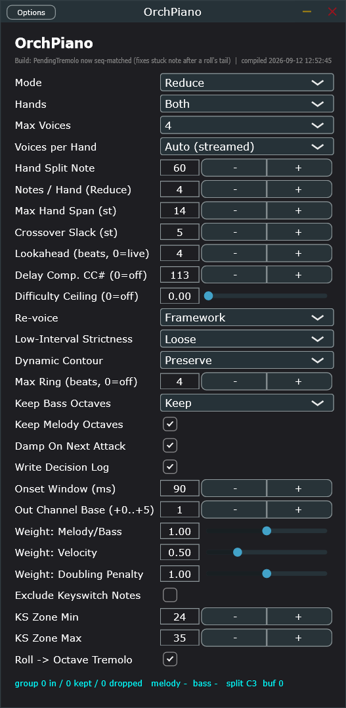

Turns a dense or merged feed into a real two-hand piano part — or repairs/transforms one that's already close.
note path · piano reductionbuildingOcpn
Three modes in one plugin: Repair (tidy an already-2-hand part), Reduce (the
real job — many voices to two hands, streaming with a short lookahead), Transform. 27 real
parameters, one flat column, declaration order == Bitwig's remote-control page order.
Actively evolving, not finished. This plugin has the longest live-debugging history in
the ecosystem — figure detection (tremolo/repeated-note/murmur), hand-split, and voice-role tagging have each
been rewritten at least once against real orchestral captures. The build subtitle in the screenshot below
names its own most recent fix, which is itself a good habit to check before trusting any specific behavior.
01
The Editor
Grouped into 8 regions, top to bottom: what this instance does (1), how many voices reach the page (2), timing
(3), reduction quality (4), articulation toggles (5), output routing (6), the importance weights that decide
which notes survive (7), and keyswitch/figure handling (8).

1
2
3
4
5
6
7
8
1
Mode & Hands
operatingMode · hands
The top-level job (Repair/Reduce/Transform) and which hand(s) it touches.
The judgment calls: how hard the reduction is allowed to be, whether/how it re-voices to a comfortable register, and how long a note may ring before a re-strike.
Octave-doubling protection for the two structurally important lines, the legato-cleanup damp rule, and whether to write the diagnostic decision log this whole debugging history has leaned on.
6
Output Routing
onsetWindowMs · outChannelBase
How wide a window counts as "one chord attack," and the base of the 4-channel lead/secondary × hand output map (see §02).
7
Importance Weights
wMelodyBass · wVelocity · wDouble
Advanced: the scoring weights reduceHand uses to decide which candidate notes survive a poly-cap. Rarely need touching.
A backstop for keyswitch leakage from a single shared destination zone (OrchMerge's own per-Sender exclusion is the primary fix for a multi-zone rig), and whether a genuine repeated-note roll renders as a real octave tremolo.
Real capture of the Standalone build, Reduce mode. The build subtitle names the most recent real fix — worth reading before trusting specific edge-case behavior.
02
The Output Channel Map
Fixed, not a parameter — outChannelBase (default 1) only shifts where this table starts.
Channel offset
Role
+0
RH lead / melody (Soprano)
+1
RH secondary (Alto)
+2
LH secondary (Tenor)
+3
LH lead / bass (Bass)
The status line at the very bottom — group N in / N kept / N dropped | melody … | bass … | split
C3 | buf N — is the live per-onset-group decision readout, the fastest way to see the reduction engine
actually working without opening the full decision log file.